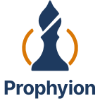
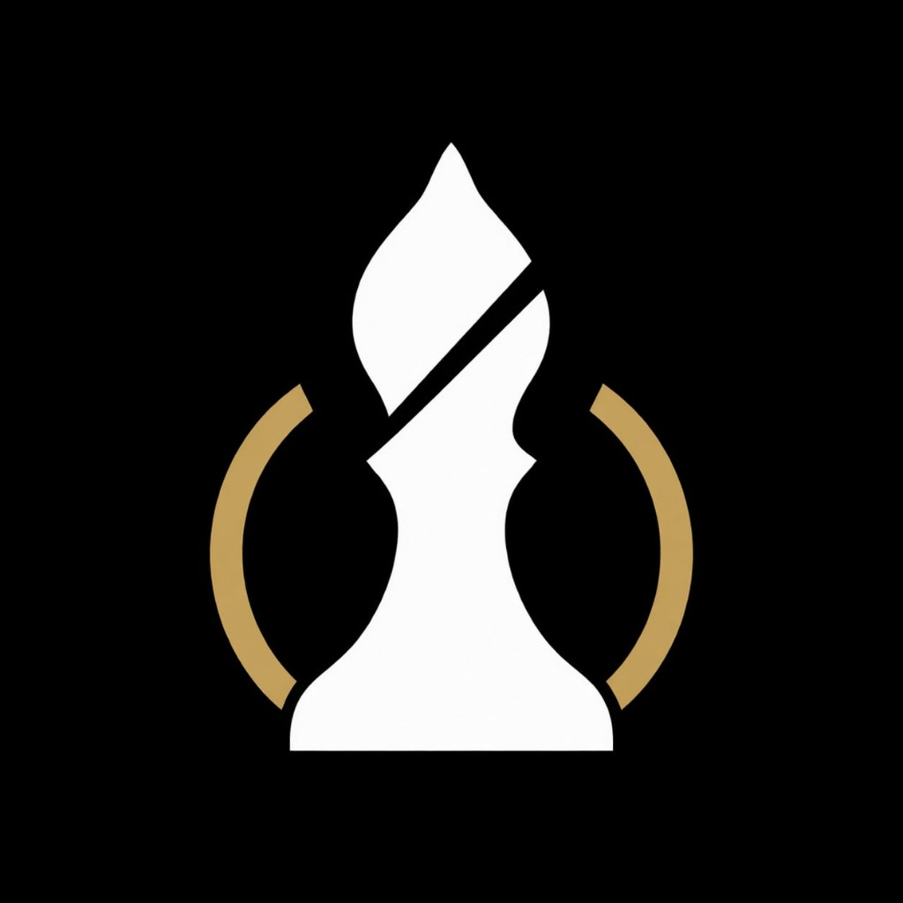

A bishop, slit open, held by two arcs
The piece is a chess bishop: mitre, diagonal slit, collar, and a wide base. The slit is a gap, so the surface behind the mark shows through. The two arcs are the only amber in the mark. Everything else is navy on light grounds and cream on dark grounds.
What changed
- ShapeThe bishop, with its slit and the two arcs, is the mark on the marketing site and in the simulation app. The rook with the pawn cut out of it stays in the September files.
- FilesNew drawings live in
logos/k-bishop/. The September drawings stay inlogos/j-promotion-cut/. - HeldNo new colours. The artwork’s gold arcs are drawn in Amber
#D97706. The piece is Navy#1E3A5For Cream#FAF8F4.
Three parts
- 1The mitre and the slit. The slit stays open. Filling it, even with amber, closes the bishop into a flame and is a different mark.
- 2The body. Collar, the notch on the right, and the wide base. The base is flat. It is part of the piece, in the same colour as the mitre.
- 3The arcs. A pair, amber, outside the piece. They are the accent, the way the rook’s base used to be. In one-colour versions they take the same ink as the piece.
How the mark sits in the product
The site and the app use the tile — a navy rounded square — next to the name set in Inter. The tile already carries its own ground, so the same file sits on the dark hero, the white header, and the navy app bar. These frames use the live layout, type, and colours.
Rehearse the crisis before it arrives
Live exercises built on your own risks, plans and operating procedures.
© 2026 Prophyion, Singapore. Scenarios are fictional and non-operational.
Where the response breaks, measured
The tile keeps its own navy ground, so it does not need a disc behind it on photography.
prophyion.com
Crisis simulated. Readiness proven.
The outlined wordmark, for places that are not the website
Slides, documents, and signatures use the outlined wordmark, the same Inter Bold drawing as v1. The website does not: there the name beside the tile is live Inter, as in the frames above. The dot of the i can be amber in the display lockup. It is too small to use under 24px.


One colour
Ink on white, and white on a dark ground. The arcs are not a second colour in these files.
Supplied artwork
The partner file is a white piece and gold arcs on black. The shape was traced from it.
The gold in that file is not a brand colour; the arcs in the kit are Amber #D97706.

Clear space, small sizes, and the things that break it
Clear space
One quarter of the mark’s height on every side, measured from the outer edge of the arcs. The lockups keep the wordmark outside the arcs, with that clear space already built in.
Minimum size
The slit and the arcs read from 32px. At 16px the tile is still the right favicon: the silhouette holds, and the slit closes up. Horizontal lockup: 140px wide.
Which file
Light grounds → mark.svg. Navy, deep, or a photograph → mark-on-dark.svg, or the tile. App icons and the website header → tile.svg. One ink → mark-mono.svg.
Navy structure, amber decision, cream ground
Carried over unchanged from v1 and from the site tokens
(frontend/src/style.css, marketing.css).
Click a swatch to copy its hex. Supporting colours — borders, muted text, success, danger — are the same list in the September kit. Amber stays one decision on a view, not a decoration.
Core
Proportion
Unchanged. Roughly how a screen should weigh out.
Where the new mark is, and where the old one stayed
This kit — docs/brand/logos/k-bishop/
The bishop, in the same roles the rook used to fill.
| File | Use |
|---|---|
mark.svg | Navy piece, amber arcs. Light grounds. |
mark-on-dark.svg | Cream piece, amber arcs. Navy, deep, photography. |
mark-mono.svg · mark-mono-white.svg | One colour. Ink, or white. |
tile.svg · tile-512.png | Website header, app bar, favicon, avatars. |
logo-horizontal.svg · -on-dark · -mono · -accent-i | Wordmark to the right of the mark. |
logo-stacked.svg · -on-dark | Wordmark under the mark. |
mark-512.png | Raster of the bare mark, for places that cannot take SVG. |
source/partner-artwork-on-black.jpg | The file the shape was traced from. |


On the site
The marketing site and the simulation app load these drawings under the
prophyion-* names in frontend/public/brand/ and
marketing/public/brand/. The app navigation uses the tile. Favicons and the
link-preview image are the same mark.
Type and voice
Inter for reading, JetBrains Mono for labels and data. The tagline stays “Crisis simulated. Readiness proven.” Name rules — Prophyion, capital P, no suffix — are in the September kit, which is otherwise unchanged.
J — Promotion · cut, kept whole
The rook with the pawn cut out of it shipped in September. Its files were not moved or overwritten; the site now loads the bishop instead. Concepts A–I remain in the September kit as the exploration that led there.
Open the v1 kit
k-bishop/mark.svg
logos/j-promotion-cut/logos/k-bishop/